Поэтапное создание примера из раздела "Работы".
 Исходным материалом послужила данная картинка из какой-то статьи.
Исходным материалом послужила данная картинка из какой-то статьи.
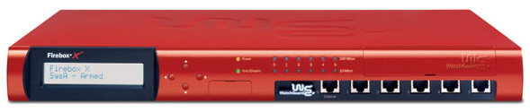
Для начала встал вопрос о выборе вида, т.е. с какой точки и в какой проекции это все будет начерчено.
Достаточно часто фигуры рисуют в изометрии, т.е. оси под 120 градусов и все размеры откладываются без искажений.
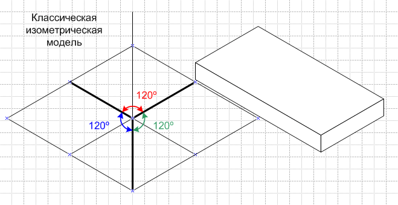
Но воссозданный пример был очень нереалистичен, поэтому, подобрав пару промежуточных вариантов, был выбран последний.
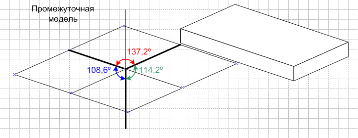
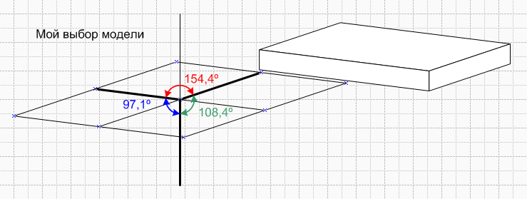
Для начала нам нужно создать самый широкий элемент, которым является верхняя крышка устройства. Для этого нам надо нарисовать 4 линии, 2 под углом 172,875 градуса и 2 под углом 18,4349.
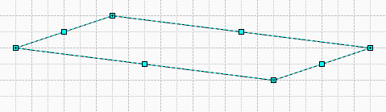
Затем, фрагментировать данные линии.
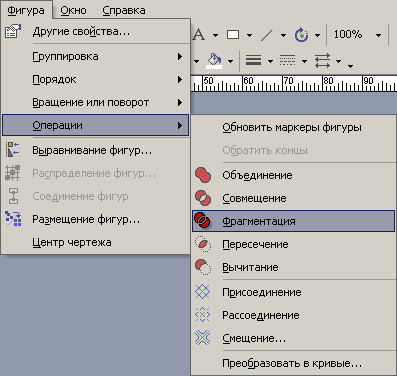
Получится искомый элемент.
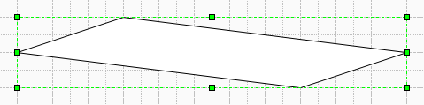
Размеры этого элемента показаны в окне "Позиция и размер".
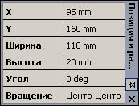
Теперь очень просто дочертить остальные элементы заготовки.
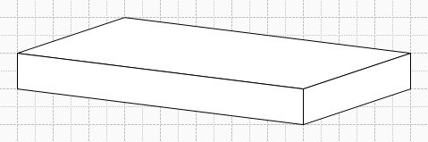
Следующим этапом будет работа с лицевой панелью.
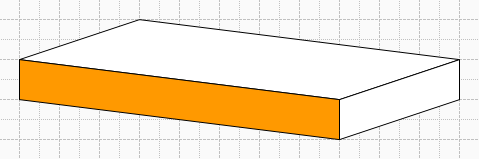
Для начала необходимо ее скопировать и сделать немного выпуклой. Достаточно сделать это "на глаз". Для этого надо выбрать инструмент "Карандаш". Он находится в подменю инструмента "Линия"
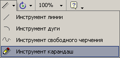
Потом следует начертить линию по паре точек и определить ее угол.
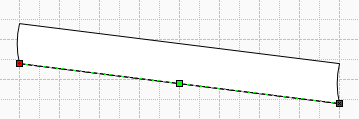
Как видите, он остался неизменным.
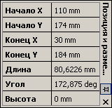
Теперь надо повернуть фигуру так, чтобы линии широкой части стали вертикально. Для этого можно вводить в графу "Угол" не только вычисленные значения, но и формулы! Поэтому прямо в ячейку надо ввести "-(172,875 deg-90 deg)". Только не забудьте указать, что это градусы (deg), иначе вычисления будут другими.
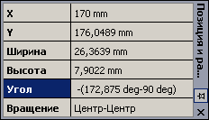
Если все было введено правильно, то теперь фигура стоит строго вертикально. В этом положении надо применить команду объединение.
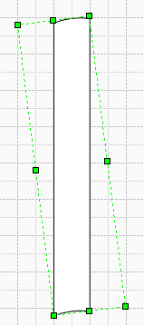
Если посмотреть на рисунок-исходник , то можно примерно насчитать 5 характерных областей перехода цвета с лицевой стороны. Значит, будет делить фигуру лицевой панели на 5 частей. Для этого надо нарисовать 6 линий в ряд и сгруппировать их.
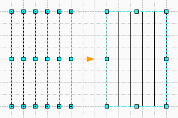
Теперь выделим лицевую панель и скопируем из окна "Позиция и размер", ширину новой фигуры.
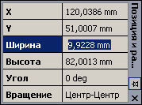
Выделим группу из линий и вставим в окно "Позиция и размер", скопированную ширину. Такие манипуляции с величинами и окном "Позиция и размер" очень удобны, т.к. перед глазами, по сути, кусок ячеек ТаблицыФигур!
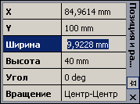
И вот, что получилось. Эта группа имеет в точности такую же ширину. Если бы ширину настраивали мышкой, то такой точности сделать не удалось, т.к. ограничение на величину шага еще никто не отменял.
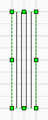
Затем увеличиваем высоту этой группы, чтобы она была явно больше лицевой панели.
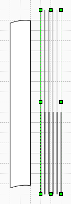
Далее выделяем фигуру и группу и делаем полное выравнивание, т.е. и горизонтальное, и вертикальное.
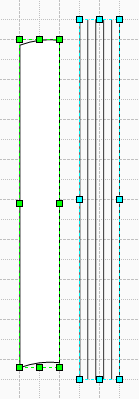
После этого, когда фигуры выровнены, делаем их фрагментацию.
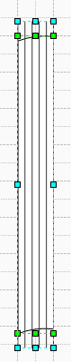
Получилось 5 частей лицевой панели. Теперь группируем их.
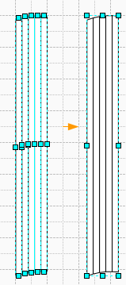
Далее надо вернуть их в прежнее положение, т.е. повернуть. Для этого в "Угол" записываем формулу "172,875 deg-90 deg", т.е. ту же формулу, только теперь без знака минус.
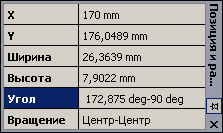
Затем надо вернуть ее на прежнее место. Для этого сначала выделяем прежнюю фигуру, затем новую и полностью выравниваем.
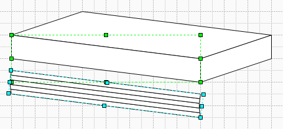
Теперь новая фигура заслоняет старую, но нам надо ее удалить. Для этого первым нажатием выделяем новую группу, потом, но не быстро, вторым нажатием выделяем элемент этой группы, еще раз нажимаем и выделяем искомую фигуру и удаляем ее.
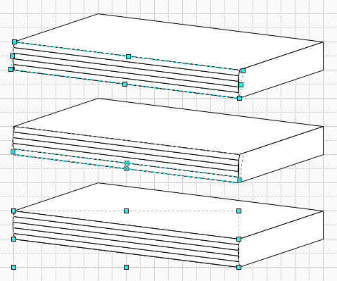
Весь этот процесс можно представить как "перебор" всех слоев, из которых строится изображение. Если продолжать нажимать мышью на одном месте экрана, то после достижения листа "перебор" начнется заново.
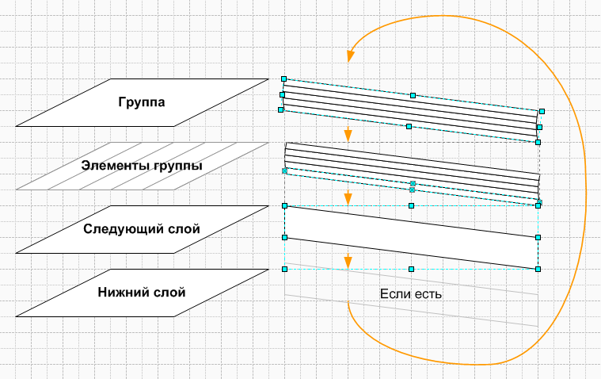
Далее займемся боковой стенкой.
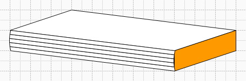
Ее надо просто сделать выпуклой и по возможности, на то же значение, что и лицевую панель. Все эти манипуляции можно произвести на "оригинале" боковой стенки, либо сначала скопировать, потом выровнять и удалить оригинал.
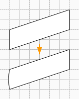
И вот уже эту заготовку можно раскрашивать. Начнем с верхней панели.
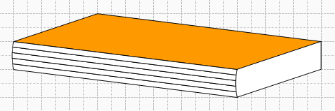
Выделяем ее и идем в заливку. Выбираем дополнительные цвет и вносим значения в RGB палитру.
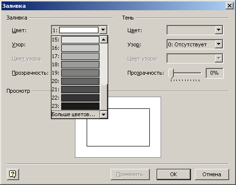
Затем выставляем 37 узор и 8 цвет узора из стандартной цветовой палитры.
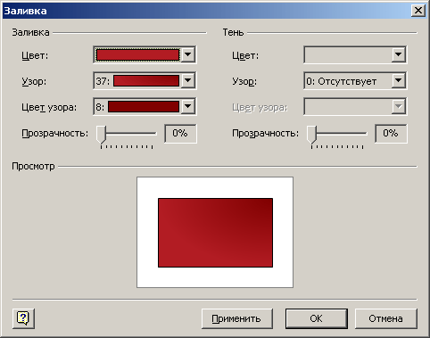
Потом надо выбрать цвет линии. Её тоже надо сделать тем же"пользовательским" цветом.
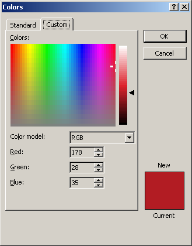
Д алее раскрашиваем части лицевой панели.
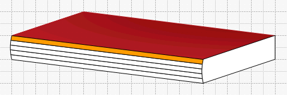
Для самой верхней части они будут такими:
Цвет такой же, как и 1-й "пользовательский".
26 узор.
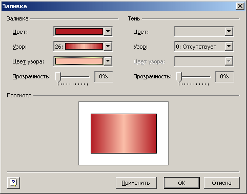
И еще один "пользовательский" RGB цвет узора.
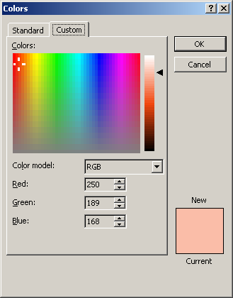
Далее вторая часть сверху.
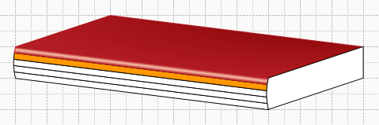
У нее сплошная заливка первым пользовательским цветом, равно как и цвет линии.
Теперь третья часть. У нее заливка с 1-го "пользовательского" цвета.
25 узор.
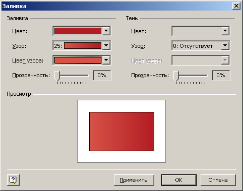
И еще один "пользовательский" RGB цвет узора, т.е. 3-й "пользовательский". Этим же цветом у нее цвет линии.
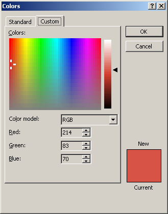
У четвертой части сплошная заливка 3-м пользовательским цветом. И такой же цвет линии.
У пятой, самой нижней части, 27 узор, верхний цвет:
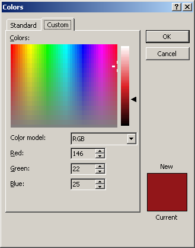
И нижний:
Цвет линии у последней части такой же, как и нижний.
Теперь займемся раскраской боковой панели.
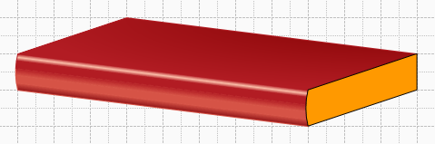
У нее цвет 1-го "пользовательского" цвета. И такой же цвет линии.
27 узор.
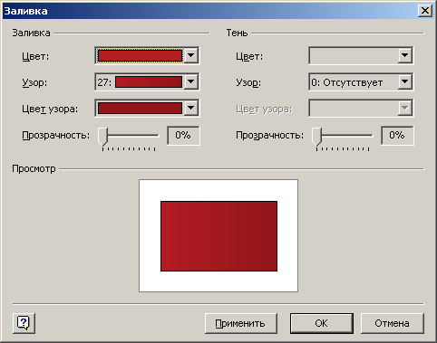
И цвет узора.
Теперь если все это сгруппировать и скопировать, а для копии применить команду объединение, то получится контур текущей фигуры. Останется убрать заливку контура и оставить только линию, сделать ее более толстой и выполнить полное выравнивание с оригиналом.
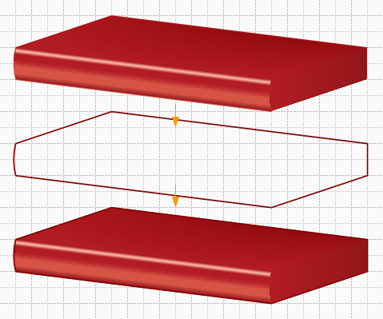
Далее создаем дисплей. Для этого начертим пару линий вдоль контура лицевой панели и пару вертикальных линий.
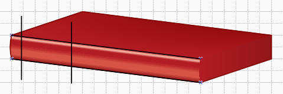
Теперь применяем команду фрагментация.
Делаем заготовку выпуклой.
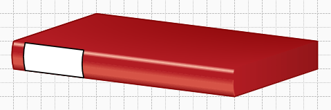
Отсекаем выпуклую часть справа.
Рисуем линию, чтобы узнать угол.
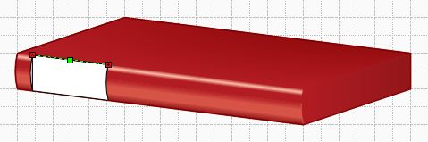
Причем у линии есть и начало и конец. Это легко определить, если присмотреться. Начало у линии в виде знака "Х", а конец в виде знака "+". Поэтому угол у этой линии будет считаться по часовой, а не против.
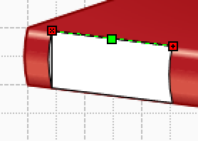
Соответственно и угол будет отрицательным.
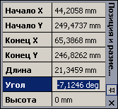
Теперь надо определиться, сколько будет занимать места дисплей? Примерно половину высоты. Тогда надо поделить область на Х=1/50%+2=4 части, т.е. надо распределить 5 линий.
Тогда рисуем 5 линий, под углом "-7,1246".
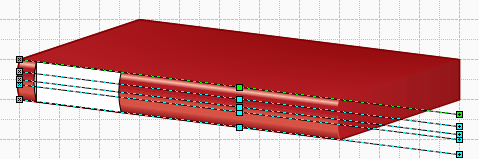
Производим распределение фигур.
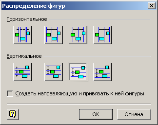
Добавляем пару линий ограничителей и фрагментируем. Удаляем лишнее и объединяем пару частей воедино.
Далее заливаем стандартными цветами и узором. Для рамки делается заливка 22 стандартным цветом, а выпуклая часть делается черной.
И получилась заготовка с дисплеем.
Затем делаем примерно тоже самое, как было описано выше, только теперь линии надо расположить так, чтобы сверху было 40%, снизу 50% и между ними 10%. Можно все это сделать либо "на глаз", либо снова расположить 11 линий и потом удалив ненужное, объединить нужное... 8-)
Теперь надо сделать отсек. Для этого он копируется в другое место. Затем делается еще одна копия, делается полное выравнивание этих двух копий. Потом к верхней копии применяют сглаживание углов, и они оба фрагментируются. Затем пара лишних углов удаляется, и производим объединение пары оставшихся углов с остатками заготовки. У получившейся, после всех манипуляций, фигуры - 2 сглаженных угла, а 2 нормальных, т.е. то, что надо.
Затем то же самое делается и с верхней заготовкой.
Получившиеся элементы расставляются по местам, оригиналы удаляются. У верхней заготовки убирают заливку и делают линию 1-м пользовательским цветом.
Далее у нижнего элемента отсекается выпуклая часть. Делается заливка 22 стандартным цветом, а выпуклая часть делается черной.
Теперь сделаем разъем. Для этого под углом "-7,1246" располагаем 8 линий и 7 горизонтальных. И опять фрагментируем, чистим и объединяем... 8-)
Центр разъема делаем черным, а ободок Цвет: 16, Узор: 40, Цвет узора: 1.
Теперь достаточно точно их располагаем и делаем команду "Распределение".
Осталось добавить кнопки. Их цвет: RGB(214,83,70), Узор 28, Цвет узора: RGB(250,189,168).
И светодиоды. Их цвет: 17, узор: 40, цвет узора: 1.
Вот он и получился. Можно дальше делать его еще более реалистично, но по-моему достаточно.
Примеры из статьи.
В начало раздела Предыдущая статья Следующая статья Автор: Ничков Алексей(a.k.a. Digitall)